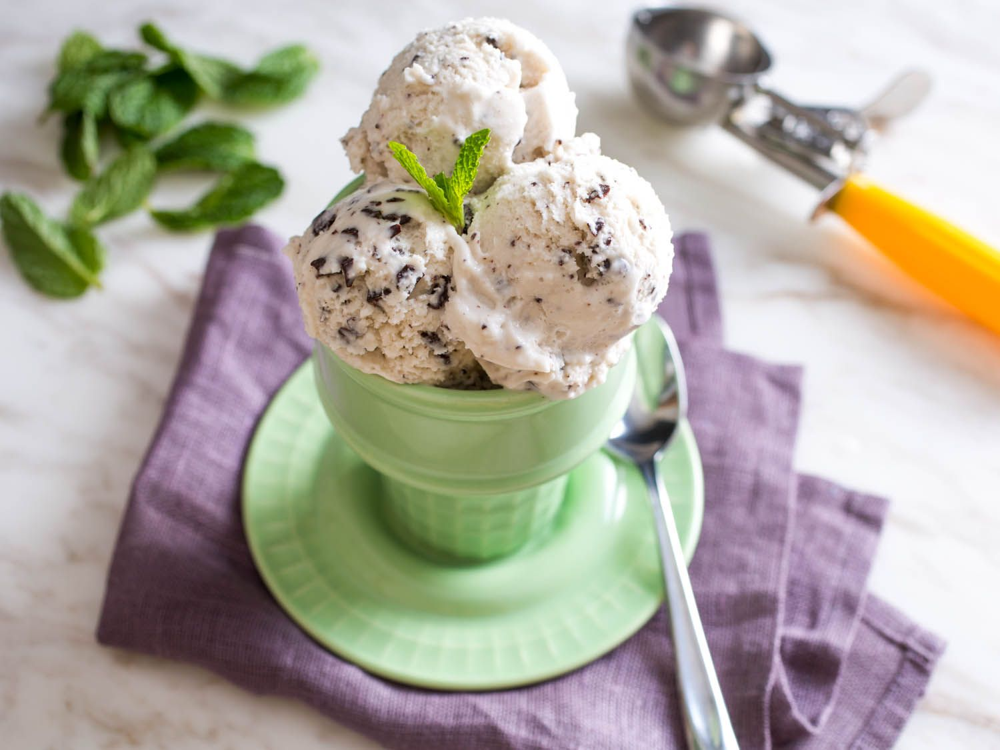

. vegan ice cream . home

vegan mint chip ice cream
This mint ice cream is the real thing, made with an abundance of fresh mint leaves for a flavor that's grassy and bright. Mint plus coconut milk are a perfect match.
You won't notice the difference!
. ingredients
- One 13.5-ounce can (about 1 3/4 cup) coconut milk
- One 14-ounce can (about 1 3/4 cup) coconut cream (see note)
- 1/4 cup "light" (clear) corn syrup
- 3/4 cup raw (turbinado) sugar (see note)
- 1 large bunch fresh mint leaves
- 3/4 to 1 tsp kosher salt, to taste
- 2 1/2 ounces dark chocolate, finely chopped and chilled in freezer
. method
- In a medium saucepan combine coconut milk, coconut cream, corn syrup, and sugar and cook over medium heat, stirring frequently, until mixture comes to a simmer. Remove from heat, stir in mint leaves, cover, and let steep for 2 hours.
- Strain mixture into a clean saucepan, pressing on mint leaves with a spoon to press out all coconut milk, and return to a simmer. Transfer mixture to blender, cover very tightly, and blend for 30 seconds. (Alternately use immersion blender directly in pot.) Pour into an airtight container, then add salt to taste.
- Cover mixture and chill in refrigerator until it is very cold (at least 45°F, about 4 hours), then churn in ice cream maker according to manufacturer's instructions. Add dark chocolate in final minutes of churning. Transfer to an airtight container and chill in freezer until ice cream is firm enough to scoop, about 5 hours.
. special equipment
- Blender (upright or immersion), ice cream maker